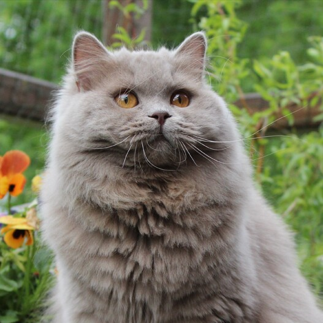

Eigenschappen
Andere naam: geen
Gewicht: 3.5-8 kg
Karakter: rustig, geduldig
Kleuren: zwart, wit, crème, chocolade, rood, kaneel, lila, pointed, tabby of schildpad
ongeveer levensduur: ~15 jaren

terug naar rassen